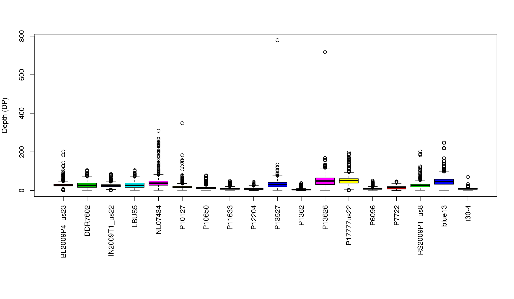
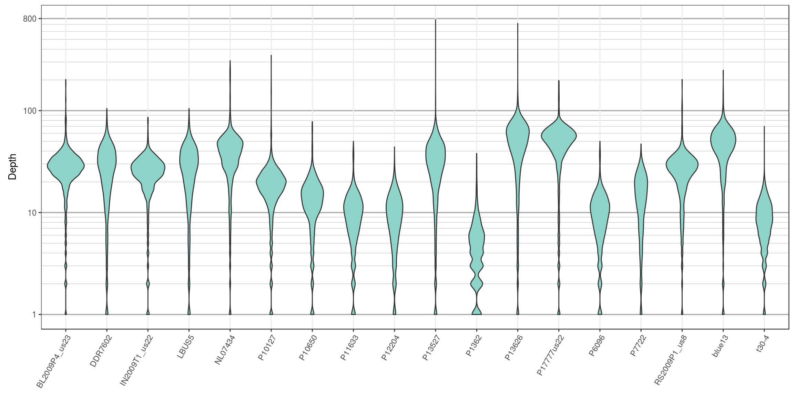

Once a sequencing run is complete the data are typically mapped to a reference genome, variants are called and these variant are stored in a VCF file. At this point one of the first questions asked is how well did the sequencing go? One measure of sequencing quality is sequence depth or how many times each position was sequenced. In VCF data only information on the variable positions are reported. But this can be used as a convenient subset of an entire genome. Many variant callers report this information, but not all. Make sure to check your variant caller documentation if you do not see this information in your file, there is a chance it was an option that was not selected. Here we visualize the depth information from a VCF file to provide a perspective on sequence quality.
We can extract the depth data (DP) with the function extract.gt(). This results in a matrix of depth data. We can take a quick peak at this to remind us what it looks like.
library(vcfR)
#vcf <- read.vcfR('TASSEL_GBS0077.vcf.gz')
data(vcfR_example)
dp <- extract.gt(vcf, element = "DP", as.numeric=TRUE)## BL2009P4_us23 DDR7602 IN2009T1_us22 LBUS5 NL07434
## Supercontig_1.50_2 62 12 37 12 NA
## Supercontig_1.50_246 10 NA 3 NA NA
## Supercontig_1.50_549 NA NA 2 NA NA
## Supercontig_1.50_668 1 NA 1 NA 1We see that it is a large matrix containing lots of numbers, so viewing it directly is of little use. Here we’ll demonstrate the use of barplots and violin plots to visualize this data.
Base R includes a great selection of graphical tools. One is barplot(). A few things nice about this function is that it is designed to work on matrices, such as the one we have, and that it is quick to execute.

We’ve generated a box and whisker plot for each sample where 50% of the data is contained within each colored box and outliers are presented as circles. One issue with this plot is that all of the data seem squished at the bottom of the plot. A log transformation could help this plot. Remember that log of zero is undefined, so if you persue a log transformation you may need to handle these cases.
Violin plots are similar to boxplots except that they attempt to present the distribution of the data that would otherwise be represented by a box. We’ll neeed to load a few packages to add functions to help us. I think you’ll see that violin plots are a little more involved to create, and they are slower to render, but many find them to be more informative and more aesthetically pleasing.
##
## Attaching package: 'cowplot'## The following object is masked from 'package:ggplot2':
##
## ggsave# Melt our matrix into a long form data.frame.
dpf <- melt(dp, varnames=c('Index', 'Sample'), value.name = 'Depth', na.rm=TRUE)
dpf <- dpf[ dpf$Depth > 0,]
# Create a row designator.
# You may want to adjust this
#samps_per_row <- 20
samps_per_row <- 18
myRows <- ceiling(length(levels(dpf$Sample))/samps_per_row)
myList <- vector(mode = "list", length = myRows)
for(i in 1:myRows){
myIndex <- c(i*samps_per_row - samps_per_row + 1):c(i*samps_per_row)
myIndex <- myIndex[myIndex <= length(levels(dpf$Sample))]
myLevels <- levels(dpf$Sample)[myIndex]
myRegex <- paste(myLevels, collapse = "$|^")
myRegex <- paste("^", myRegex, "$", sep = "")
myList[[i]] <- dpf[grep(myRegex, dpf$Sample),]
myList[[i]]$Sample <- factor(myList[[i]]$Sample)
}
# Create the plot.
myPlots <- vector(mode = "list", length = myRows)
for(i in 1:myRows){
myPlots[[i]] <- ggplot(myList[[i]], aes(x=Sample, y=Depth)) +
geom_violin(fill="#8dd3c7", adjust=1.0, scale = "count", trim=TRUE)
myPlots[[i]] <- myPlots[[i]] + theme_bw()
myPlots[[i]] <- myPlots[[i]] + theme(axis.title.x = element_blank(),
axis.text.x = element_text(angle = 60, hjust = 1))
myPlots[[i]] <- myPlots[[i]] + scale_y_continuous(trans=scales::log2_trans(),
breaks=c(1, 10, 100, 800),
minor_breaks=c(1:10, 2:10*10, 2:8*100))
myPlots[[i]] <- myPlots[[i]] + theme( panel.grid.major.y=element_line(color = "#A9A9A9", size=0.6) )
myPlots[[i]] <- myPlots[[i]] + theme( panel.grid.minor.y=element_line(color = "#C0C0C0", size=0.2) )
}
We can see that the log transformation stretches out the smaller values and compresses the larger values. This allows us to focus on where our data has the greatest density. Things to look for in these plots are whether all samples are equally represented, whether there are a few samples of low quality that may need to be omitted from downstream analyses, or if therre are a small number of jackpot samples that received all the reads at the expense of the other samples. Here the samples appear to be fairly eqaully represented.